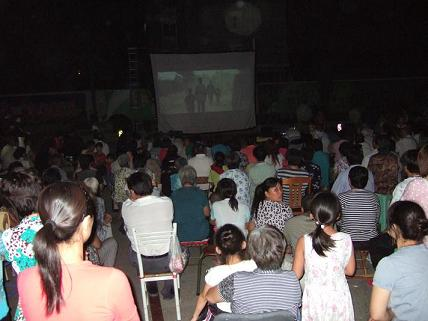

11日晚，解放街道残联在解放社区文化广场开展丰富多彩的残疾人文化活动，组织辖区居民、残疾人开展“关心帮助残疾人，实现美好中国梦”为主题的观看电影活动。

当晚7时，居民们吃过晚饭，三三两两拿着小板凳，说说笑笑地来到小区广场。数字电影宽大的银幕、高清晰的画面放映着优秀影片，逼真的音响效果，让社区居民赞叹不已。本次活动精选的影片是《私人订制》，吸引了不同年龄段的居民观看。辖区残疾人马杰说：“在家门口看电影想起了小时候看露天电影的情景。那时还是用放映机放的胶片电影，片子也不多，不像现在条件这么好。”
工作人员表示，观看电影活动的开展，拉近邻里之间、居民与社区之间的距离，也为创建和谐稳定的社区构筑了平台。通过观影活动，让更多的残疾人能像健全人一样体会电影带来的乐趣，感受社会的温暖，享受更为丰富的精神文化大餐。
xxx管理处
2014年07月28日